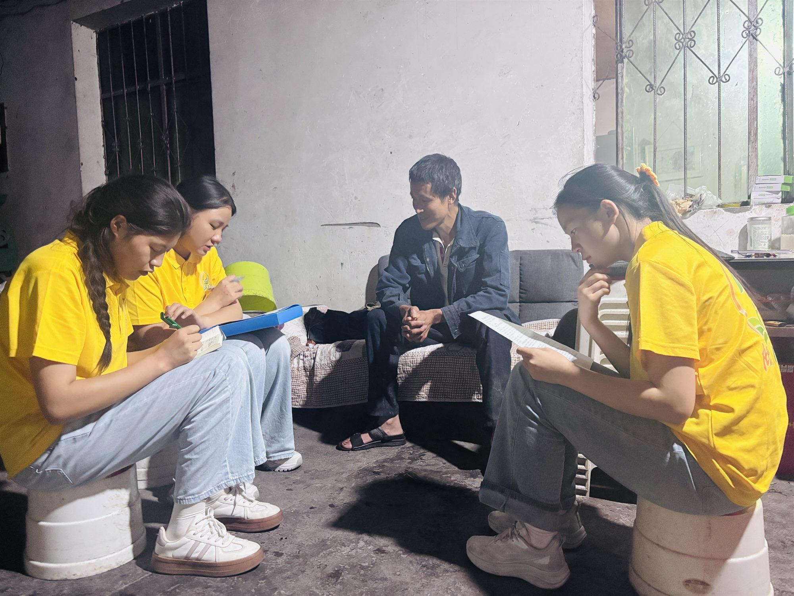
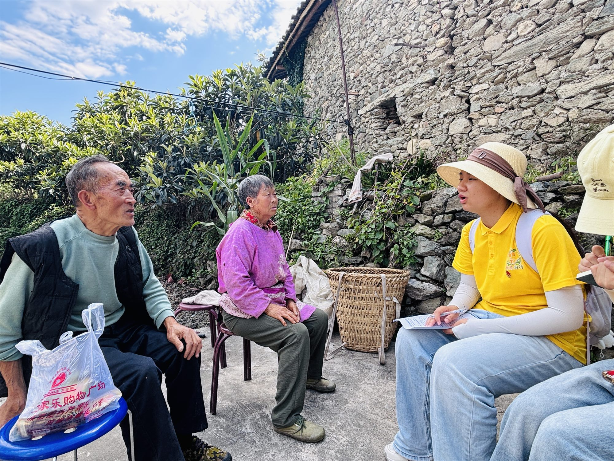
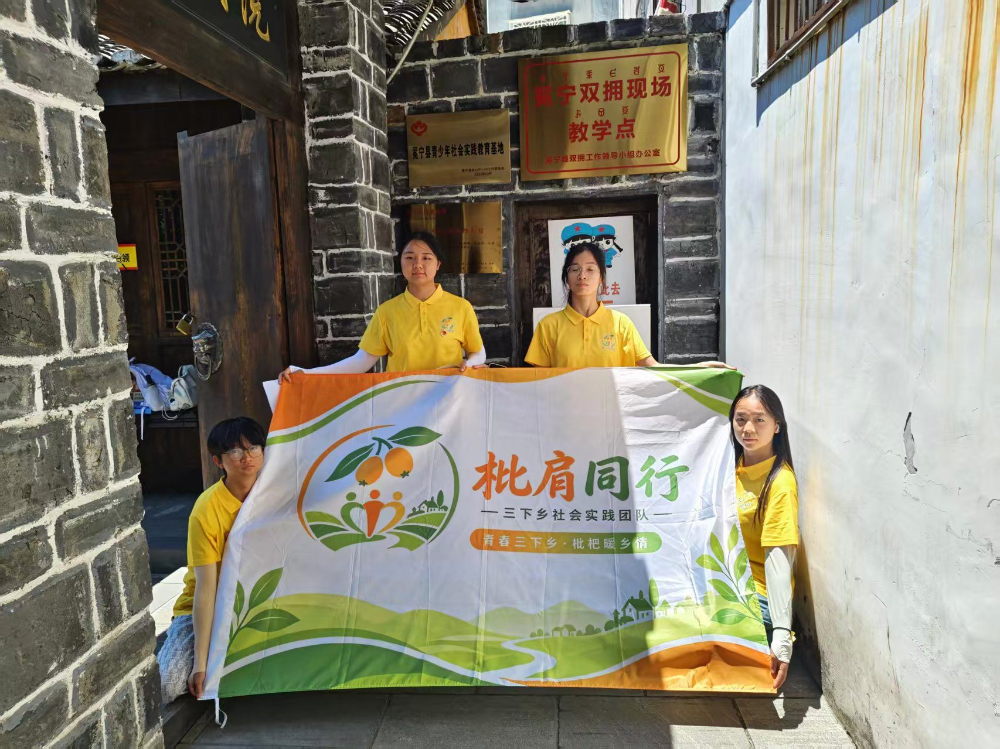

助农增收
土地流转、务工分红，让村民腰包鼓起来
通过“公司 + 合作社 + 农户”的模式，当地不少村民把土地流转给合作社统一经营，既能按时拿到流转费，又能到果园务工，采摘季一天能挣不少。
村里的大妈笑着说：“以前地里种点苞谷糊口，现在帮人管果、摘果，家门口就把钱挣了，还热闹。”土地连片经营，让散户的小果园变成了规模化的“致富园”。
枇杷产业兴了，村子也更有生气了。
在冕宁的果园里，有人从城市返乡种果，有人守着祖辈的土地深耕八年。 他们用汗水和时间，换来漫山金黄、粒粒甘甜。这里记录的，是这片土地最真实的助农故事。

年轻的返乡人放下写字楼里的工作，回到冕宁老家当起了“新农人”。从一开始的茫然，到四处学习生态种植技术，他把一片荒坡打理成了生机勃勃的枇杷园。
“外面的人不知道我们枇杷有多好，我想把它卖出去，也想让更多人留下来种果。”他用互联网思维做产地宣传，成为当地果园里的“带头人”。
一颗好果，可以改变一个人，也能带活一片乡土。

老李在里庄种枇杷已经整整八年。八年里，他和家人顶过倒春寒的低温柔、扛过突如其来的冰雹，一次次把受损的果树重新养起来。
“最难那年减产了一半，但树还在，人就还有盼头。”他不善言辞，却把每一棵枇杷都当孩子般照料。如今果园渐成规模，收入一年比一年稳。
正是这份咬牙坚持，才有了今天桌上的这一口清甜。
通过“公司 + 合作社 + 农户”的模式，当地不少村民把土地流转给合作社统一经营，既能按时拿到流转费，又能到果园务工，采摘季一天能挣不少。
村里的大妈笑着说：“以前地里种点苞谷糊口，现在帮人管果、摘果，家门口就把钱挣了，还热闹。”土地连片经营，让散户的小果园变成了规模化的“致富园”。
枇杷产业兴了，村子也更有生气了。
青年学子走进果园，为产地发声

大学生实践团队来到冕宁果园，实地了解枇杷种植与产地环境。

与果农面对面交流，记录他们真实的种植经历与期望。

通过直播与网络传播，帮助产地扩大知名度，把好果介绍给更多人。